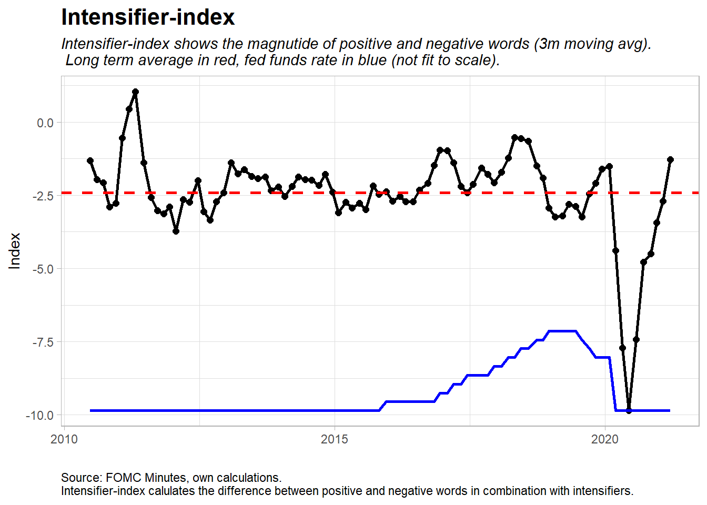
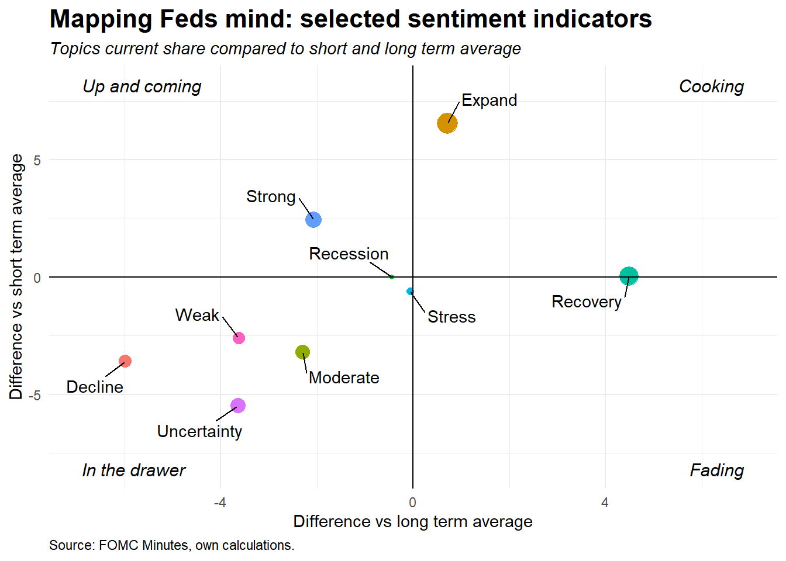

Text mining FOMC Minutes 2020-12-16
Sentiment has clearly picked up during the fall. One interesting point is that there is a positive net sentiment index, but still below average intensifier index which indicates that the negative words are more connected with intensifier words then what positive words are. Mapping Feds mind gives further juice on this as topics/words like strong, expansion are up and coming while decline, weak are well below its short and long term average. Recovery is fading which should be normal with that in mind: first we have decline -> followed by recovery -> which leads to strong/expansion. During 2020 we had it all. Al together the economy did recover well during the fall but we should´t jump the bandwagon yet. The spread of Corona-virus have intensified since the meeting even though vaccination process has begun (which news of was probably driving some of the Fed-happiness). Uncertainty is real, which also shows in the plots.
Short explanation of the indexes.
Net sentiment index shows the net sum of positive words minus negative words for each Minutes.
Intensifier index shows the sum of positive minus negative words together with intensifier words like “extremely”, “exceptionally” etc. This index shows the depth of the sentiment.
(Strong-Weak)/Moderate index shows the net of words like “strong, stronger” minus “weak, weaker” divided by words like “moderate”.
Mapping Feds mind maps which selected words/topics that are hot and not.
Latest report can be found here.
Code available on github.


